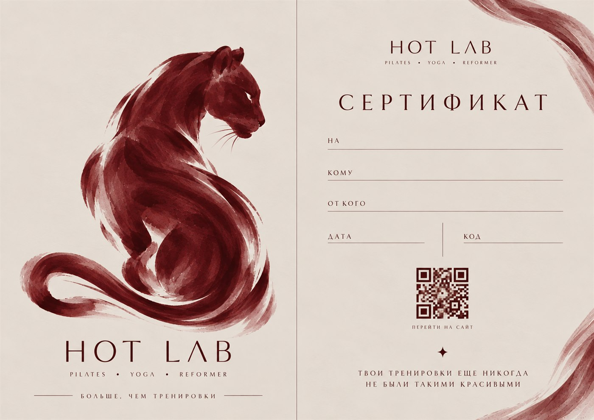

В России День матери отмечают в последнее воскресенье ноября. В 2026 году это 29 ноября. Если вы ещё решаете, что подарить маме на День матери, вспомните, о чём она говорила в последнее время. Любимые конфеты, давно запланированный поход в театр или свободное воскресенье вдвоём могут подсказать идею лучше любого списка.
Недорогие подарки ко Дню матери
- Любимый десерт к чаю. Возьмите тот, который мама всегда выбирает, и найдите время посидеть с ней за чашкой чая.
- Снимок в рамке. Распечатайте фотографию, которую мама редко видит. На обороте напишите, где и когда она сделана.
- Книга по её интересам. Подберите новый детектив любимого автора, сборник рецептов или издание о городе, куда мама мечтает поехать.
- Небольшой букет. Уточните её любимые цветы и вложите записку с личным поздравлением.
Что подарить маме на День матери своими руками
- Открытка с одним тёплым воспоминанием. Напишите, какой момент из детства вы до сих пор вспоминаете и за что благодарны маме.
- Семейная книжка рецептов. Запишите несколько блюд, которые готовят в вашей семье, и добавьте фотографии или короткие истории.
- Видеопоздравление от близких. Попросите каждого записать короткое пожелание и соберите ролик. Эта идея особенно удобна, если родные живут в разных городах.
- Домашний завтрак. Приготовьте любимое блюдо мамы, накройте стол и возьмите уборку на себя. Дети могут добавить рисунок или подписать меню.
Оригинальный подарок маме в Казани: впечатления и время вместе
- Билеты в театр или на концерт. Выберите знакомый маме жанр и заранее сверьте дату, если планируете пойти вместе.
- Мастер-класс на двоих. Керамика, живопись или флористика подойдут маме, которая любит пробовать новые занятия. Уточните продолжительность и что входит в стоимость.
- Семейная фотосессия. Подарите её от дочери и сына вместе. Дату и место можно выбрать с мамой после праздника.
- Подарочный сертификат на пилатес в Казани. Если мама интересуется тренировками или давно хотела попробовать реформер, подарите ей занятие в HOT LAB либо сертификат на выбранную сумму.
Как выбрать подарочный сертификат HOT LAB для мамы
В студии HOT LAB в Казани можно оформить электронный подарочный сертификат на выбранную сумму или конкретные тренировки. Если мама ещё выбирает направление, удобен сертификат на сумму. Если она уже говорила, что хочет попробовать пилатес на реформере, можно подобрать занятие именно в этом формате. В студии также есть пилатес на коврике, горячая йога и горячая растяжка.
На странице сертификата можно связаться с администратором через Telegram. Перед оформлением уточните срок действия, условия записи и доступные направления. Электронный сертификат можно переслать маме или распечатать и вложить в открытку.
Выбрать подарочный сертификат →
Частые вопросы о подарках на День матери
Что подарить маме, у которой всё есть?
Предложите конкретный план на день. Например, сходите вместе на выставку и забронируйте столик в её любимом кафе. Если мама ценит семейные фотографии, соберите небольшой альбом и подпишите снимки.
Что подарить маме от дочери или сына?
Выберите то, что связано с вашей общей историей. От дочери это может быть совместный мастер-класс, о котором вы давно говорили, а от сына — восстановленное семейное фото или приготовленный по её рецепту обед. Если понравилась другая идея, ориентируйтесь на мамины интересы.
Какой подарок маме можно купить в последний момент?
Выручат цветы из магазина рядом с домом, электронные билеты на мероприятие или электронный подарочный сертификат. Если подарок нужен в день праздника, уточните у продавца, когда он сможет его оформить.